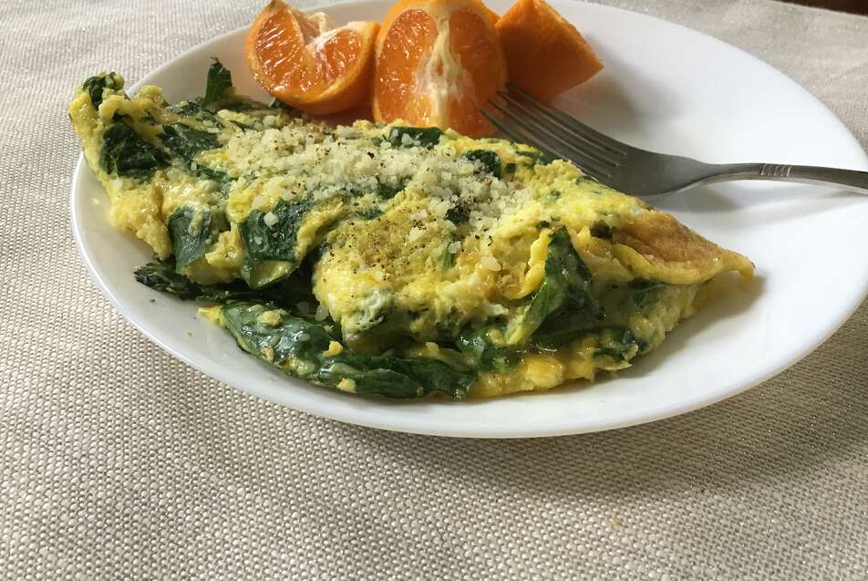

Baby Spinach Omelet

Description
Tender baby spinach, Parmesan cheese, and a little nutmeg are cooked with eggs. A carb-cutter's perfect start for the day.
Ingredients
- 2 eggs
- 1 cup torn baby spinach leaves
- 1 1/2 tablespoons grated parmesan cheese
- 1/4 teaspoon onion powder
- 1/8 teaspoon ground nutmeg
- salt and pepper to taste
Steps
- In a bowl, beat the eggs, and stir in the baby spinach and Parmesan cheese. Season with onion powder, nutmeg, salt, and pepper.
- In a small skillet coated with cooking spray over medium heat, cook the egg mixture about 3 minutes, until partially set. Flip with a spatula, and continue cooking 2 to 3 minutes. Reduce heat to low, and continue cooking 2 to 3 minutes, or to desired doneness.